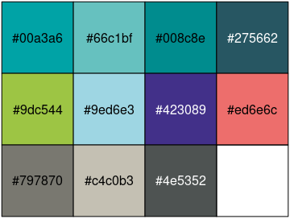
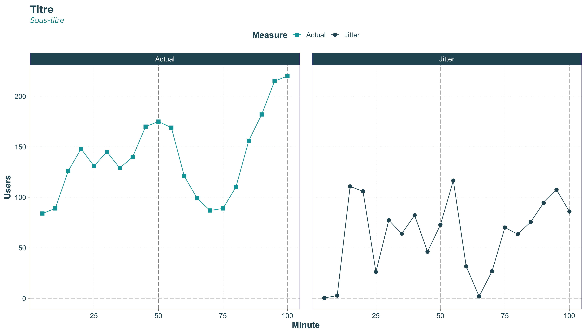
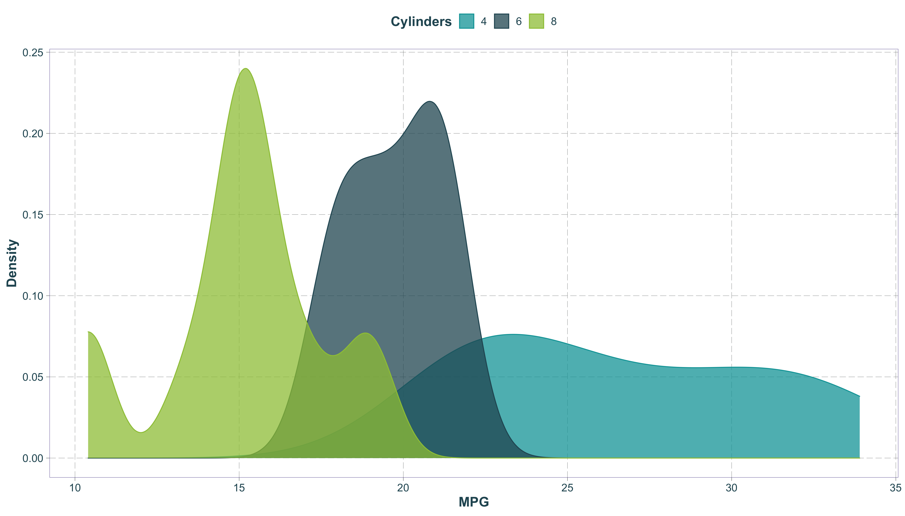
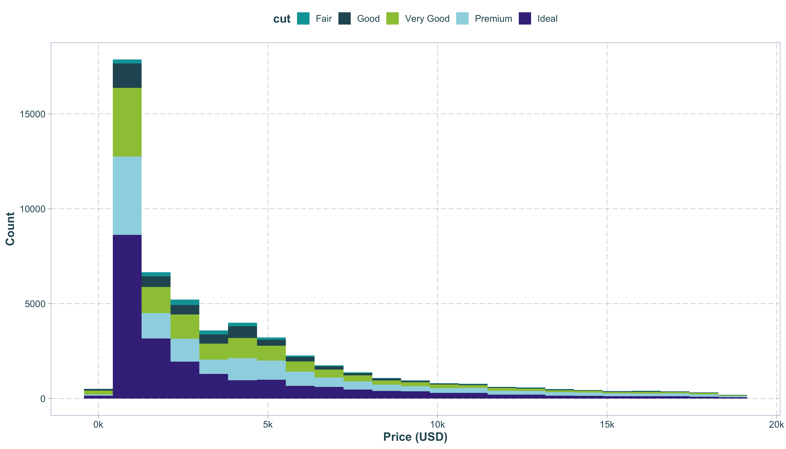
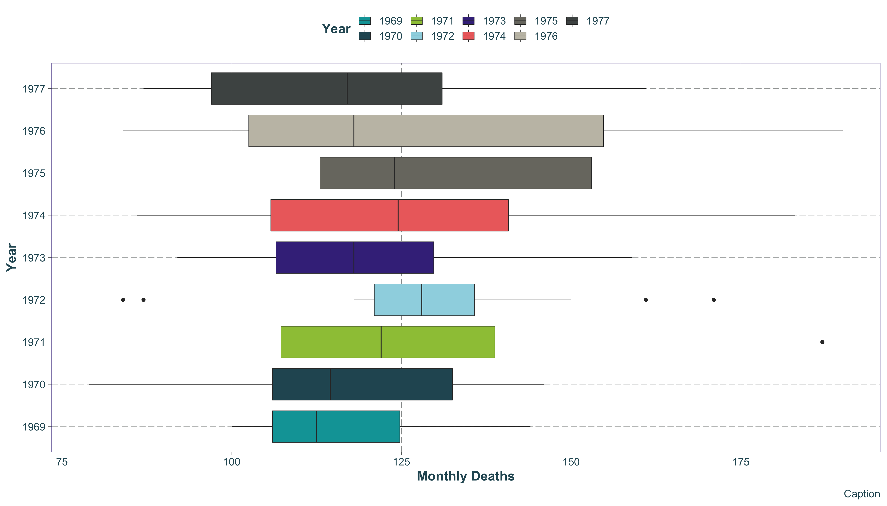
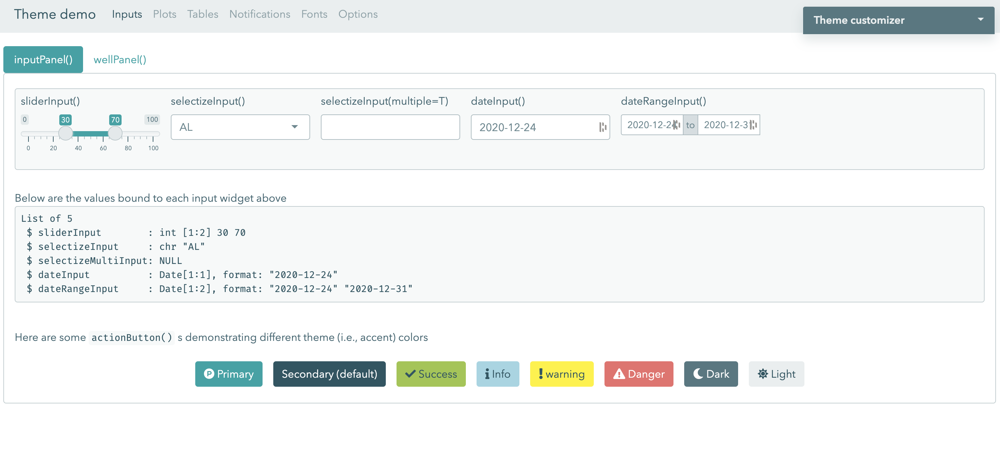
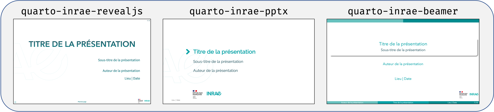
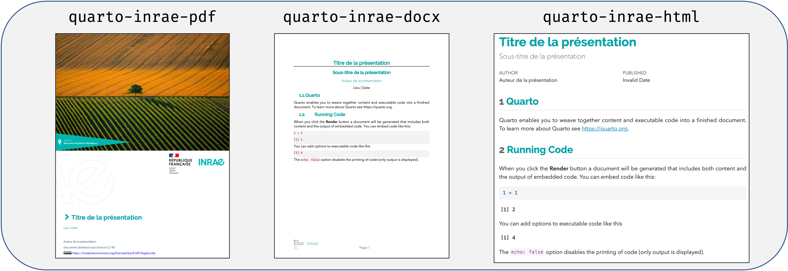
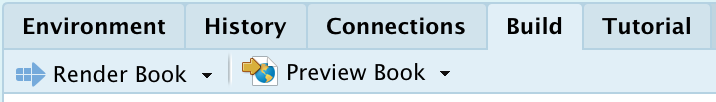

InraeThemes est une collection non officielle de templates, thèmes et autres éléments graphiques basés sur des formats en lien avec R et en accords avec la charte graphique INRAE.
Installation
Le package peut-être installé via :
# install.packages("remotes")
remotes::install_github("davidcarayon/InraeThemes")ou encore via :
# install.packages("remotes")
remotes::install_git("https://gitlab.irstea.fr/david.carayon/inraethemes")NB : L’ancienne version (1.0.1), qui contenait notamment des modèles Rmarkdown, peut toujours être installée via :
# install.packages("remotes")
remotes::install_github("davidcarayon/InraeThemes@v1.0.1")Pré-requis
Certaines fonctionnalités de ce package nécessitent l’installation de 2 polices adoptées dans la charte graphique INRAE : Raleway et Avenir Next LT Pro. Ces polices peuvent être téléchargées ici.
La police Fira Code est utilisée dans certains templates et est, d’ailleurs, recommandée sur votre Rstudio pour l’affichage du code avec ligatures : Fira Code
Si vous ne possédez aucune installation de LaTeX sur votre machine, vous devrez également en installer une version minimale pour utiliser les modèles mobilisant LaTeX :
install.packages("tinytex")
tinytex::install_tinytex()Certains modèles nécessitent l’utilisation de Quarto, successeur de Rmarkdown, qui peut être téléchargé ici : https://quarto.org/docs/get-started/.
Une version de Rstudio supérieure à la 2022.02.1 est nécessaire pour utiliser Quarto de manière conviviale.
Thème et palettes {ggplot2}
La palette de couleurs est construite à partir de la charte graphique V3.

Les deux fonctions à utiliser sont theme_inrae() pour le thème général du graphique ainsi que les fonctions scale_<fill/color>_inrae().
library(InraeThemes)
library(ggplot2)
## Example dataset
data("example_datasets")
ggplot(example_datasets$www, aes(x = Minute, y = Users, color = Measure, shape = Measure)) +
geom_line() +
geom_point(size = 3) +
facet_wrap(~Measure) +
geom_point(size = 1.8) +
scale_color_inrae() +
scale_shape_manual(values = c(15, 16)) +
labs(title = "Titre", subtitle = "Sous-titre") +
theme_inrae()
ggplot(example_datasets$cars, aes(x = mpg, fill = cyl,colour = cyl)) +
geom_density(alpha = 0.75) +
scale_fill_inrae() +
scale_color_inrae() +
labs(fill = "Cylinders", colour = "Cylinders", x = "MPG", y = "Density") +
theme_inrae()
ggplot(example_datasets$dia, aes(x = price, fill = cut)) +
geom_histogram(binwidth = 850) +
xlab("Price (USD)") +
ylab("Count") +
scale_fill_inrae() +
scale_x_continuous(label = function(x) paste0(x / 1000, "k")) +
theme_inrae()
ggplot(example_datasets$drivers, aes(x = Year, y = Deaths,fill = Year)) +
geom_boxplot(size = 0.25) +
ylab("Monthly Deaths") +
theme_inrae() +
scale_fill_inrae() +
coord_flip() +
labs(caption = "Caption")
Thème Shiny/Sass
Ce package propose un thème Sass construit avec bslib. Le thème peut être prévisualisé comme ceci :
bslib::bs_theme_preview(bs_inrae())
Et est utilisé dans une application Shiny via :
ui <- fluidPage(
theme = InraeThemes::bs_inrae(),
...
)Templates de documents aux couleurs INRAE
Il existe à ce jour dans l’écosystème R deux technologies (ou packages) pour la réalisation de documents :
- Rmarkdown : Le plus classique, bénéficie aujourd’hui d’un bon recul et d’une bonne stabilité
- Quarto : Une nouvelle version de Rmarkdown, plus orientée “multilangue” et moins dépendant de R. Mais très jeune et soumis à de nombreuses évolutions.
Pour le package {InraeThemes}, la décision a été prise très tôt de migrer au plus vite les sorties proposées vers Quarto dès qu’un équivalent à ce qui était proposé avec Rmarkdown est disponible.
Dans les deux cas, ce package ne vise qu’à fournir des templates associés à des ressources (Tex, Css…) et à des documents Rmd/Qmd au YAML correctement configurés. Il est recommandé de se tourner vers les documentations de ces deux technologies pour pleinement profiter des fonctionnalités proposées.
Vous trouverez les documentations respectives à ces liens :
Templates Rmarkdown
Trois templates Rmarkdown sont encore proposés par ce package et sont accessibles via l’interface graphique Rstudio :
| Format (Technologie) | Via Interface graphique Rstudio |
|---|---|
| Présentation Xaringan (RemarkJS) | New file > Rmarkdown > From Template > Présentation INRAE |
| Rapport Paginé (PagedJS) | New file > Rmarkdown > From Template > Rapport INRAE |
| Cartes de visite (PagedJS) | New file > Rmarkdown > From Template > Carte de visite INRAE |
Note : Avec la récente implémentation de PagedJS dans Quarto, les deux derniers formats seront bientôt amenés à migrer vers Quarto
Templates Quarto
Rstudio ne propose pas actuellement de module de création de document Quarto avec template via leur interface graphique. La procédure actuellement proposée pour l’utilisation de templates Quarto est de créer des extensions Quarto.
L’extension créee pour accompagner {InraeThemes} est ici : davidcarayon/quarto-inrae-extension
Installation de l’extension
Pour l’installer, l’utilisation du terminal est pour l’instant requise (en attendant l’acceptation de la PR#45). Deux approches sont possibles.
Pour démarrer un nouveau document/projet avec l’extension :
quarto use template davidcarayon/quarto-inrae-extensionPour ajouter l’extension sur un projet déjà existant :
quarto install extension davidcarayon/quarto-inrae-extensionUtilisation
Un template au format .Qmd sera automatiquement créé en portant le nom saisi dans le terminal. Le choix du format de sortie désiré se fait dans le YAML en rajoutant le format en suffixe à quarto-inrae-*. Les formats possibles sont :
Pour des slides :

Pour des documents :

Personnalisation
Pour customiser ces templates, il vous suffit de vous rendre dans le répertoire _extensions et de modifier les fichiers css/scss/tex ou les images associées.
A noter pour les rapports PDF :
La sortie PDF (basée sur LaTeX) s’appuie sur des fichiers
.texindépendants qu’il faudra customiser à l’intérieur de l’extension pour l’image de couverture ainsi que pour la dernière page.L’image sur la page de garde (photo.png) peut-être remplacée par n’importe quelle image. Si la hauteur de la nouvelle image diffère de celle d’origine, il faudra alors modifier la valeur en cm du
\vspace*{}en L11 detemplates/page_de_garde.texpour retrouver une mise en forme correcte.La cartouche “Centre” peut être remplacée par celle qui vous correspond à télécharger ici
Template de projets
Livre quarto (ou rapport fragmenté)
Il est également possible via ce package, via l’interface de création de projet Rstudio, de créer un projet de livre quarto (équivalent à un rapport avec plusieurs chapitres) à la {bookdown} :
Projects > New Project > New Directory > Livre / Rapport chapitré INRAE
Il suffit d’utiliser le bouton Build (situé en haut à droite sur Rstudio) pour compiler ce type de document une fois créé.

Analyse de données
Nous proposons dans ce package un template de projet pour l’analyse de données, librement inspiré du package {ProjectTemplate} Ce template est directement accessible dans Rstudio via Projects > New Project > New Directory > Data Analysis Project. L’utilisateur peut ici définir la localisation de son projet et choisir d’initialiser ou non un dépôt git.
Note : Cette architecture n’est qu’un exemple de bonne pratiques parmis bien d’autres. Libre à l’utilisateur de modifier ce template selon ses habitudes. Vos suggestions d’améliorations sont évidemment les bienvenues ici.
Work in Progress / TO-DO
- Meilleure gestion de la page de garde PDF (photo) ainsi que des infos de bas de page directement dans le YAML
- Implémentation des templates issus de PagedJS lorsqu’il seront disponibles
- Proposition de code R au lieu du terminal pour l’installation d’extension quarto (en attente PR#45)